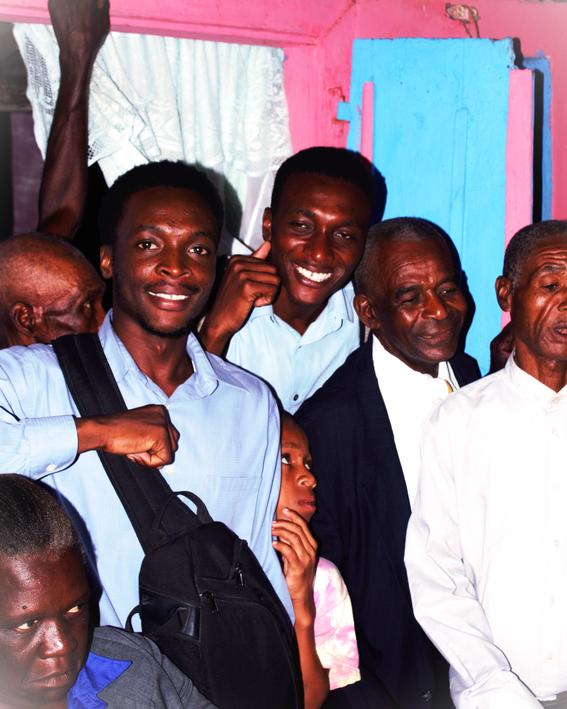

A Propos de moi
Je suis un étudiant en Sciences Informaques à l'Institut Universitaire des Sciences (IUS), Mon parcours allie rigueur académique, sens de de l’organisation et passion pour les technologies web et réseau. En tant que secrétaire pédagogique et Technicien dans le domaine informatique, je facilite les échanges entre étudiants et administration, tout en assurant la gestion du réseau informatique de l’établissement.
Compétences
Gestion pédagogique
Administration universitaire
Responsable Informatique
Technicien en Informatique
Programmation Web (HTML, CSS, JS)
Communication institutionnelle
Organisation d’événements académiques
Administration universitaire
Responsable Informatique
Technicien en Informatique
Programmation Web (HTML, CSS, JS)
Communication institutionnelle
Organisation d’événements académiques
Parcours Universitaire
- Licence en Sciences Informatiques - IUS - 2022 à 2026
Expériences
- Technicien à Sondesign Advanced Technology - SAT (2023 - présent)
- Secrétaire pédagogique - IUS (2024 - présent)
- Développeur Web freelance - Création de sites Web
Contact

Email : robaldo.badio@ius.education
Téléphone : +509 4655-2180
Localisation : Jacmel, Haïti
GitHub : Lien GitHub